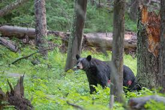
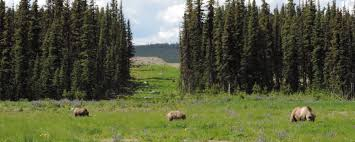

As mentioned previously, Bears can be found in different areas. Different factors can impact a bear's requirements for living in certain habitats. Here are some factors that determine different bears' habitats:
| Bear Type | Temperature | Food | Water | Shelter |
|---|---|---|---|---|
| Black Bear | Moderate, Adaptable | Omnivore (Berries/Fish) | Streams, Lakes, Rain | Dense Forests, Caves |
| Grizzly Bear | Cold to temperate | Omnivore (Berries/Fish) | Rivers, Lakes, Snowmelts | Dens, Heavy Vegetation, Grasslands |
Black Bears are commonly found in forests, wetlands, and mountain ranges.
Grizzly Bears are found in Arctic barren grounds, the prairie, foothills grasslands, or temperate rainforests.
